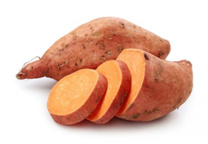

You train for a reason. Whether that reason is to increase your strength, improve your endurance, enhance your flexibility, or simply just “to look good naked,” the key to reaching your goal has a lot to do with how you fuel your body. By fuel, I mean food: real, whole, nutrient-dense food. While part of training is for the sheer enjoyment of being active and/or possibly competing, we also want to reap the side effects of a more muscular, lean physique.
Understanding pre/post-workout nutrition and how to properly implement it into your current regimen can be tricky. While there are a ton of resources explaining what to do and why, many people are still confused with how to implement this information into their hectic lifestyle. Face it, we’re all trying to do the best we can with our health, but our crazy schedules sometimes don’t allow us to prepare elaborate meals post workout as we shuffle into work a few (okay, maybe more than a few) minutes behind schedule. To maximize your efforts in the gym, you need to give yourself premium fuel in the form of quality nutrients. Don’t waste your energy without getting something back.
As ironic as it sounds, when you push yourself at the gym you are breaking down muscle. Heavy training, especially strength training, actually causes damage to muscle fibers. Why would your body do this? Essentially, your body is replacing weak muscle fibers with more functional muscle and remodeling its composition. Survival of the fittest at its best! Along the same lines, your carbohydrate and muscle protein stores also start to become depleted with high intensity exercises. Without proper nutrition, this remodeling and repletion process will come to a standstill and while you may be training harder or lifting more, you may not be seeing the results. If you don’t put adequate nutrients in the tank, you cannot expect to get anything out.
If it’s a high intensity workout session, then carbohydrates and protein are your best friend. How much carbohydrates and protein you need will vary widely depending on your sport, size, training intensity, length of workout, and goals.
For example, someone doing a moderately intense yoga session will not need nearly as many carbohydrates (if any) post workout as someone doing a more high intensity workout. Even various CrossFit style workouts will demand different macronutrient needs. The general rule is that if you are kicking into glycolytic pathways (think high intensity interval training) then your need for carbohydrates is going to increase. If your workout is structured around heavy weights with adequate rest periods, your need for post-workout carbohydrates will decrease.
Some individuals who are more strength oriented or show signs of insulin resistance do well even on a lower-carbohydrate, moderate fat and protein post-workout plan. If you need more help structuring a specific plan for your workout routine, consult a registered dietitian or nutrition coach that you feel comfortable with. It’s well worth the professional opinion.
For the carbohydrate portion of post-workout meal, I prefer using starchy vegetables such as sweet potatoes, yams, squash, or pumpkin. Starchy vegetables provide antioxidants and are a nutritionally dense carbohydrate option. While it may seem odd at first to chow down on a sweet potato instead of oatmeal post-workout, give it a try and see how you do.
As soon as possible! It’s understandable that you may not want to throw back a large meal after working out, but a small-moderate sized portion of both carbohydrates and protein is essential to recovery, repair, and ultimate strength. There are many trains of thought on how long is okay to wait to eat (1 hour, 45 min, 30 min), but the biggest take away is as soon as possible. In my opinion: within the first 30 minutes, but no longer than an hour.
So hopefully by now you get the basics of what post-workout nutrition is, when it’s needed, but now you’re curious as to how to apply it to your crazy schedule. Let’s look at some real world problems:
No time = The first thing to do is to figure out a game plan.
Evaluate when you’re working out and how much time you have after that workout to your next appointment (whether that be work, class, picking up the kids, and so on). We said that post-workout nutrition is needed as soon as possible, so reflect on how long it takes you to shower up, drive home, and all of the activities that come between you and your re-fueling window. If you are one that takes forever in the shower and has a long drive home from the gym, you may be better off taking a few bites while you drive home. If you have a short commute and take speedy showers, then you may be able to wait until you are done. Heck, I’ve even showered at the gym then eaten my eggs and sweet potato while I was still at the gym getting ready for work. Do what you need to do and don’t care what the world thinks.
Having foods prepared ahead of time is something we all need to get in the habit of doing. This can mean prepping hard boiled eggs, pre-chopping fruits/veggies, or loading up on jerky, dried fruit, roasted sweet potatoes/squash, or even canned pumpkin. The last thing you want to have to worry about is taking time to get the oven pre-heated and wait for your post-workout creation to be done. Talk about extending the window! The post-workout fuel does not have to be elaborate; its main purpose is to make your workout count.
Not hungry = Hate to be a pain, but it doesn’t matter, you need to eat.
You may not feel hungry, but your body sure is. Again, if you just performing a low-intensity workout this re-fueling period is not as necessary. However, some individuals perform high intensity workouts and food is the last thing on their mind. Some tricks here would be to consume lighter fare, such as apple sauce (they make easy pouches these days), baby food (you laugh, but it works even for the ‘tough guys’), squeezable fruit, or if absolutely needed a protein shake/fruit smoothie. I’m not a huge advocate of protein powders, but I’d rather see that come into play than have someone not consume any protein after a strenuous workout. If you’re not one to tolerating food post-workout, just try a little bit at a time. You may be surprised that you become more tolerant of food after exposure.
Two last things to consider with your post-workout meal include minimizing the fat and considering your sugar sources. While fats are a huge part of a balanced diet, they slow down the transit of the carbohydrates and protein through the stomach. If you’re performing a long duration high intensity workout, you essentially want the carbohydrates and protein to be absorbed and utilized as quickly as possible, so save the fats for other opportunities throughout the day. Lastly, fructose tends to fill up liver glycogen stores whereas glucose can replace lost muscle and liver stores. For athletes that need a rapid repletion of muscle and liver glycogen, a mixture of glucose and fructose (mostly glucose) is the best bet.
You work hard so you deserve results. Put just SOME of that work into planning a solid post-workout meal and you’re on the road to success no matter what kind of athlete you are.